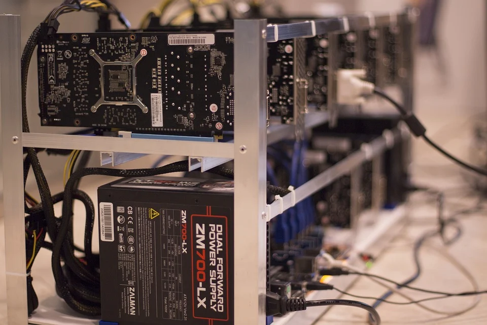

Ici, nous allons vous faire décourvrir l'intérêt du code dans le principe de la blockchain
La blockchain, qu'est ce que c'est ?
La blockchain, un outil de décentralisation à ses débuts
La blockchain est une technologie de stockage et de transmission d’informations, transparente, sécurisée, et fonctionnant sans organe
central de contrôle (définition de Blockchain France). Elle est la technologie au coeur du Web Decentralisé et de son corollaire,
la finance décentralisée.
ar extension, une blockchain constitue une base de données qui contient l’historique de tous les échanges effectués entre ses utilisateurs
depuis sa création.
Cette base de données est sécurisée et distribuée : elle est partagée par ses différents utilisateurs, sans intermédiaire, ce qui permet à
chacun de vérifier la validité de la chaîne.
Il existe des blockchains publiques, ouvertes à tous, et des blockchains privées, dont l’accès et l’utilisation sont limitées à un certain
nombre d’acteurs.
Une blockchain publique peut donc être assimilée à un grand livre comptable public, anonyme et infalsifiable. Comme l’écrit le mathématicien
Jean-Paul Delahaye, il faut s’imaginer « un très grand cahier, que tout le monde peut lire librement et gratuitement, sur lequel tout le
monde peut écrire, mais qui est impossible à effacer et indestructible. »
L'algorithmie

Une ferme à mining
Toute blockchain publique fonctionne nécessairement avec une monnaie ou un token (jeton) programmable. Bitcoin est un exemple de monnaie
programmable.
Les transactions effectuées entre les utilisateurs du réseau sont regroupées par blocs. Chaque bloc est validé par les noeuds du réseau
appelés les “mineurs”, selon des techniques qui dépendent du type de blockchain. Dans la blockchain du bitcoin cette technique est appelée
le “Proof-of-Work”, preuve de travail, et consiste en la résolution de problèmes algorithmiques.
Une fois le bloc validé, il est horodaté et ajouté à la chaîne de blocs. La transaction est alors visible pour le récepteur ainsi que
l’ensemble du réseau.
Les langages utilisés
Les cryptomonnaies les plus courantes
Cela va dépendre de la Blockchain utilisé pour le développement de vos smart-contracts et applications décentralisées.
Sur la Blockchain Ethereum, le langage utilisée est Solidity : inspiré de C++, Python et Javascript. C'est le plus populaire et utilisé.
Il existe aussi Vyper, qui est focalisé sur la sécurité, en se basant sur le Python.
Pour la Blockchain NEO, il est possible de coder des smart-contracts, directement dans un langage déja connu : C#, VB.NET, F#, Java et
Python. Ils ont pour objectif, à terme, de supporter également le C, C++, Javascript.
Il existe d'autres Blockchain, comme EOS, qui permettent de développer des SC/Dapps, cela va dépendre sur laquelle vous souhaitez coder.